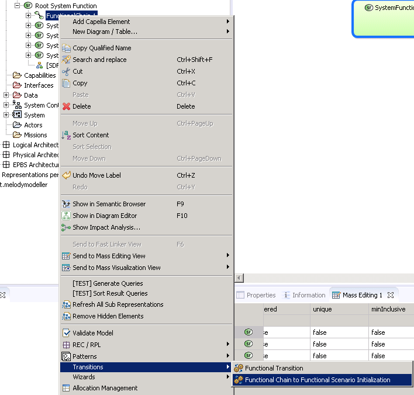
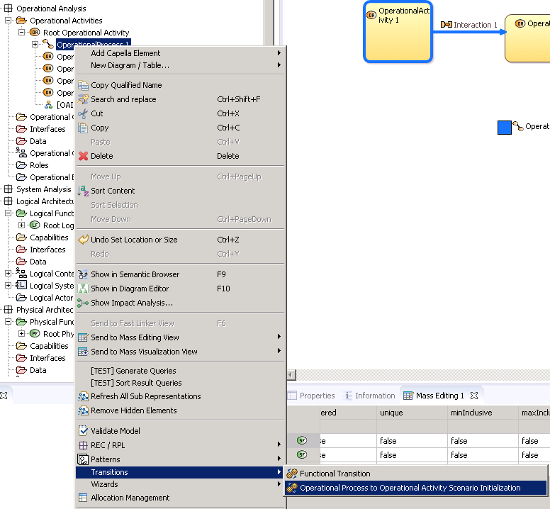
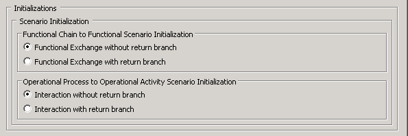

{kind=link}
{kind=link}
{kind=link}

For better results, graphical elements have to be unpinned before running this action. On the diagram menu choose "Select All" then "Unpin selected elements".
Contextual diagrams are used to focus on one specific element. This feature is available when you select the background of the Diagram and assign a specific model element (for instance a Functional Chain) in the field Contextual Element of the Properties view. Then, the Diagram has specific refresh rules and always keeps up-to-date the contextual elements.
As an example, imagine a Dataflow diagram always synchronised with Functions and Functional Exchanges coming from a selected contextual Functional Chain, or an Architecture Diagram always synchronised with Components and Functional Exchanges coming from a selected contextual dynamic Exchange Scenario.
For more details, please refer to the section Capella Guide > User Manual > Diagram Management > Diagram Concepts > Blank and Contextual Diagrams, Contextual Diagram Elements.
This feature is often coupled with “Synchronizing Diagram” capability in order to master the visibility of the elements in the resulting Diagram, see section below “Unsynchronize your diagram”.
Elements of Interest is a property of diagram allowing to associate the diagram with some model elements for the purpose of navigation or documentation.
From a diagram, Capella provides some tools called accelerators allowing automated synchronization or generations of model elements.
For instance, you can propagate Exchange Items allocated to a Functional Exchange to its source and target ports, etc…
For more details, please refer to the section Capella Guide > User Manual > Modelling Wizards and Accelerators.
The idea is to initialize a diagram from another one based on information in the model. Then apply the layout from a third diagram, a template one for instance.
Note: A recommended best practice is to capitalize the layout creation effort in a diagram and use it as a reference to apply the layout on other diagrams and keep their display consistent.
In order to save time when information can be deduced from the model, Capella is able to initialize diagrams from others, not only in a same layer but also between different layers, based on realization links.
|
|
For better results, graphical elements have to be unpinned before running this action. On the diagram menu choose "Select All" then "Unpin selected elements". |
On a Functional Chain, you can run the command from the Transitions menu "Functional Chain to Functional Scenario Initialization" to create a Functional Scenario. Each time you run this command you will create a new scenario.

On an Operational Process, you can run the command from the Transitions menu "Operational Process to Operational Activity Scenario Initialization" to create an Operational Activity Scenario. Each time you run this command you will create a new scenario.

|
|
In the Capella Transition/Generation preference page, you can control the creation of interactions between instance roles during initialization (with or without return branch).  |
From each Capella modeling level, you can initialize an [IS] Interface Scenario diagram from an IS in the upper layer. This initialization is controlled by some preferences. You can find more informations about them in the sections Capella Guide > User Manual > Preferences > Capella > Transitions/Generation
We provide the following IS initializations :
This feature is often coupled with:
{kind=link}
{kind=link}
{kind=link}
{kind=link}
{kind=link}
{kind=link}
{kind=link}
{kind=link}